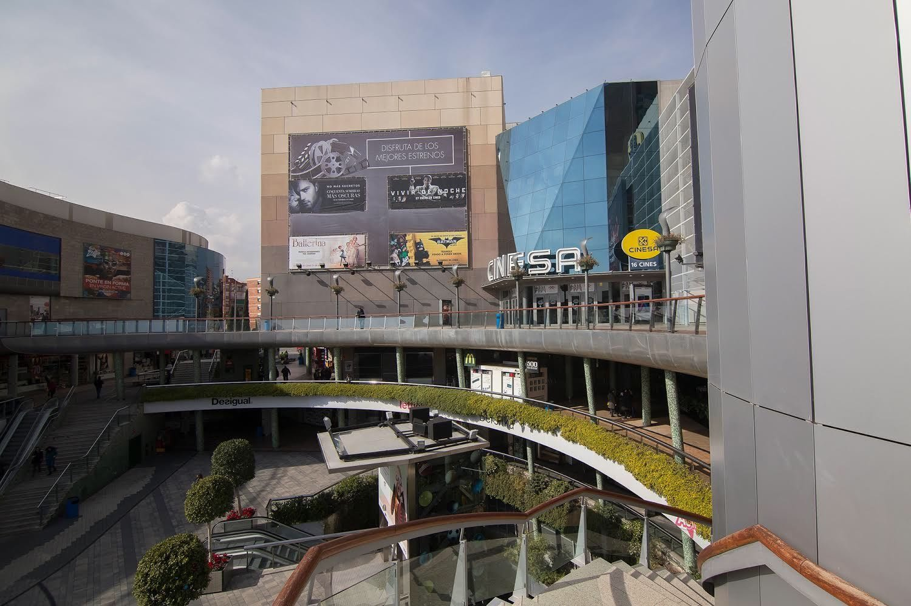
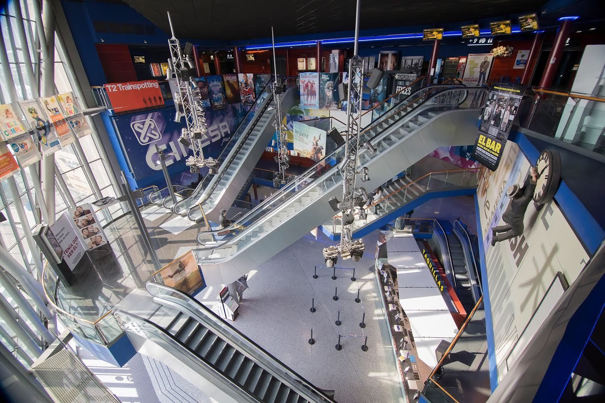
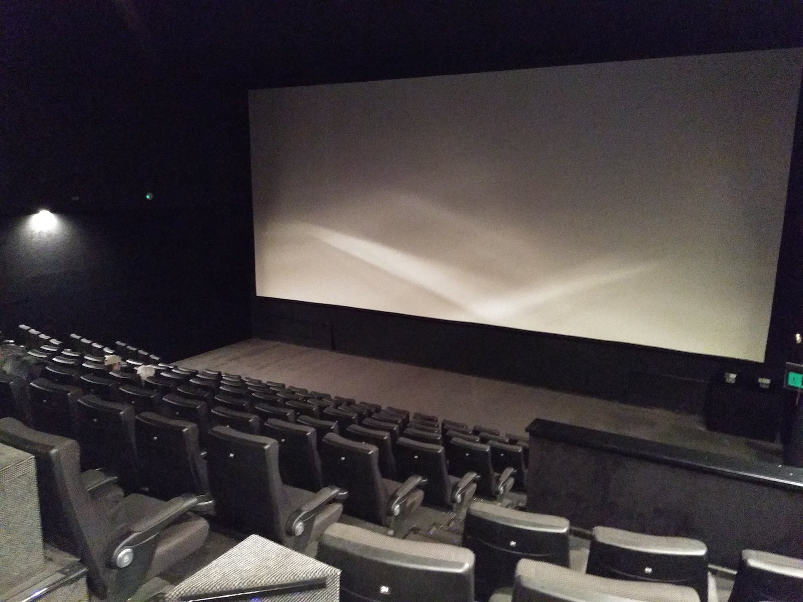

Cinesa Heron City (Talks) & TBD (Workshops)
Talks Day (Monday-Tuesday):
Centro Comercial Heron City
Cines Cinesa
Passeig d'Andreu Nin, s/n
08016 Barcelona
|  |
Access by metro: station Fabra i Puig - line 3, station LlucMajor - line 4 |
Workshops Day (Wednesday):
TBD

